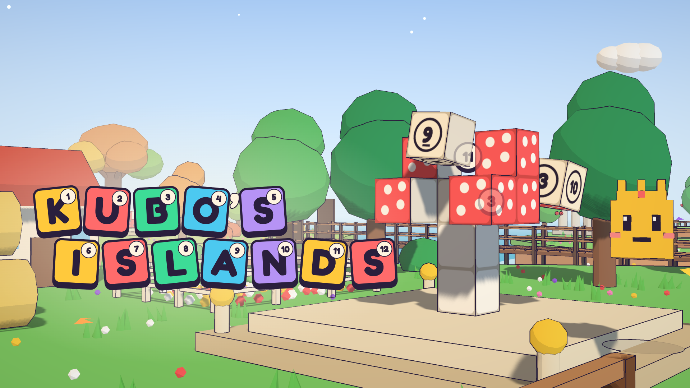
CrazyGames submission pack
Everything the portal's Submit a game form asks for, top to bottom, with the art in the slots it goes in
and a check against every limit the portal enforces. All of it is rendered from the game itself by
node tools/art-pack.mjs; the limits live in tools/art/spec.mjs, the copy in tools/art/submission.mjs.
Generated 2026-10-26 at cd5b1c4.
Step 1 · Create the game
Game name
14 / 35- It is what the page
<title>, the title screen and all three covers say. It cannot be changed after submitting. - No descriptor ("…: 3D Block Puzzle"): the covers carry nothing but the logo, and the form wants the name to be the in-game title.
Kubo's Islands
- ✓ 14 of 35 characters.
- ✓ The page title says "Kubo's Islands".
Game files
Engine: HTML5. The portal takes a folder, not an archive: upload the files the site deploys (index.html, manifest.webmanifest, css, fonts, icons, js, lib) — the same list .github/workflows/deploy.yml copies. There is no build step.
| Files | Size | |
|---|---|---|
| The upload | 291 | 5.81 MB |
| Initial download (a first visit, to the opening cutscene) | 59 requests | 1.86 MB |
| Portal limit | 1500 | 250 MB |
- ✓ 291 files in the upload, of 1500.
- ✓ 5.81 MB in the upload, of 250 MB.
- ✓ All paths in index.html are relative.
- ✓ Initial download 1.86 MB over 59 requests for a first visit, up to the opening cutscene (the platform allows 50 MB, 20 MB for the mobile homepage).
Game options
The switches on the same screen. Ticks are remembered in this browser only.
Step 2 · Details
Category
The form takes exactly one. Rebuilding figures from numbered blocks is the game; walking the islands is how you get to them. Adventure is the other honest choice.
Puzzle
- ✓ "Puzzle".
Tags
At most five, and only from the site's own list (each was checked to have a live /t/ page). Several obvious ones are not tags at all: voxel, building, blocks, cozy, island, exploration, first-person, kids. If mobile or mouse arrive as admin-managed tags, good spares are relaxing, math (the Puzzler mode's sums) and controller (full gamepad support).
- ✓ 5 of at most 5, all with a live tag page.
Description
1896 chars · 2078 with formatting / 10000Rich text in the portal (headings, bold, lists; no links or HTML). Copy formatted and paste into the editor: headings and lists arrive as headings and lists. The first sentence is what the site shows in search results.
Kubo's Islands is a cozy 3D block puzzle: a great storm smashed the figures of the Archipelago into numbered blocks, and you rebuild all 50 of them, block by block, across 10 island worlds.
Every block face with a number belongs against the face with the same number on another block. Walk the island, find the block that fits, carry it over and link it on. Kubo, the last Keeper of the islands, floats along with you and shows you the ropes.
How to play
- Find the numbers: floating bubbles on the figure show which numbers are open right now.
- Carry and link: grab a loose block with that number (you can carry four), then click the bubble. Carry several that fit and they chain in one after another.
- Earn three stars: finish a figure, beat its par time, and use no hints.
The worlds
Ten archipelagos of islands joined by plank bridges, each with its own look, music and twist: the Meadow Isles, Windmill Farm with its bouncy hay, the icy Frost Isles and snowy Frostwood, Sunset Reef, Shipwreck Cove, low-gravity Starfall Peak and Moon Isle, windy Gale Cliffs, and the Eye of the Storm, where the 330-block Keeper Colossus waits to be rebuilt.
Features
- 50 hand-made figures, from a sprout to a lighthouse, a star dragon and the Keeper Colossus
- The Keeper's Isle: walk to any world through its portal, with your rebuilt figures on show
- Kubo's Garden: stroll among every figure you have rebuilt
- The Workshop: design your own figures, play them as puzzles and share them with friends
- Puzzler mode: a harder way to play, with sums instead of numbers
- Tools for the big figures: a magnet that pulls in blocks that fit, and Kubo Express to send them to the figure from anywhere
- Plays with mouse and keyboard, touch or a gamepad; keys can be rebound, and there are comfort and accessibility settings
- Available in 25 languages, and your progress is saved automatically
- ✓ 1896 characters of text, 2078 with formatting, of 10000.
- ✓ Says 50 figures in 10 worlds, as js/levels.js has.
- ✓ Says 25 languages; the game has 25 locales (all complete: tools/check-i18n.mjs).
Controls
803 chars · 1408 with formatting / 5000The same editor.
Mouse and keyboard
- WASD or the arrow keys to walk, Shift to run, mouse to look around.
- Left-click or E to grab a block, and to link it onto the figure.
- Space to jump (hold it inside a glowing ring to float up tall figures).
- 1–4, the mouse wheel or Tab to pick a block in your backpack; right-click or Q drops it.
- H for a hint, R to rebuild a finished figure for more stars, Esc to pause. Keys can be rebound in Settings.
Touch
- Drag with your left thumb to walk (push all the way to run) and with your right thumb to look around.
- Tap a block to grab it and a bubble to link it; the buttons jump, drop and give a hint.
Gamepad
- Left stick to walk, right stick to look, A to jump.
- X or RT to grab and link, B or LT to drop, LB / RB to pick a block, Y for a hint, Start to pause.
- ✓ 803 characters of text, 1408 with formatting, of 5000.
Marketing creatives URL
optionalNot shown to players. Leave it empty, or share this art/store folder (covers, previews, stills, the icon) on a drive and paste the link.
Step 3 · Covers and videos all five mandatory
Upload & Crop, and submit the full frame: each file is already the exact size. The red box is where the site lays its own labels ("New", "Hot"); the title stays out of it. Under each cover, the size it is mostly seen at, on the portal's own background. The covers are compositions: a scene the game rendered (the Mushroom on the Meadow Isles, its last blocks flying in, Kubo by it) under the game's own logo, the only text on them.

- ✓ 1920×1080, 704 kB.
- ✓ Lockup clear of the portal's 768×216 label zone.
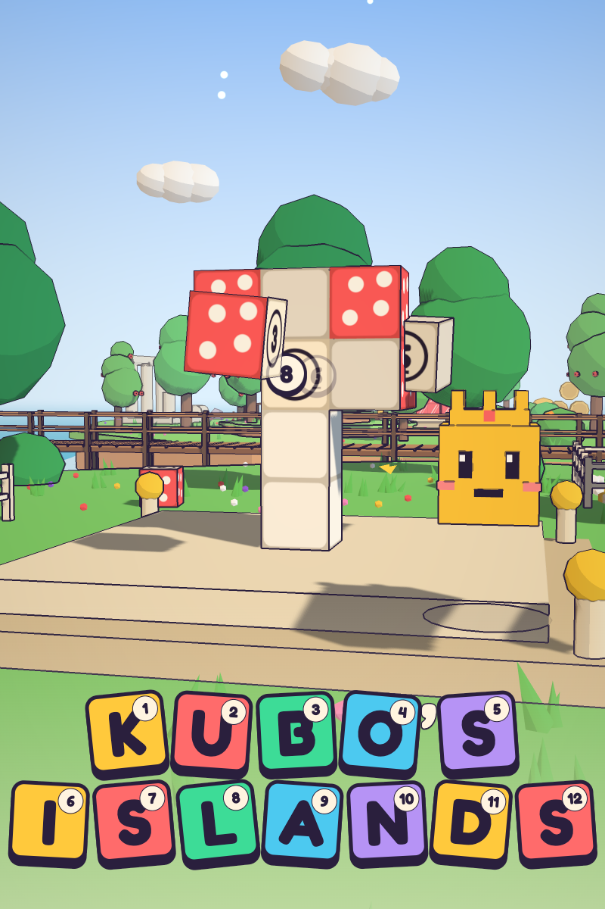

- ✓ 800×1200, 319 kB.
- ✓ Lockup clear of the portal's 320×120 label zone.
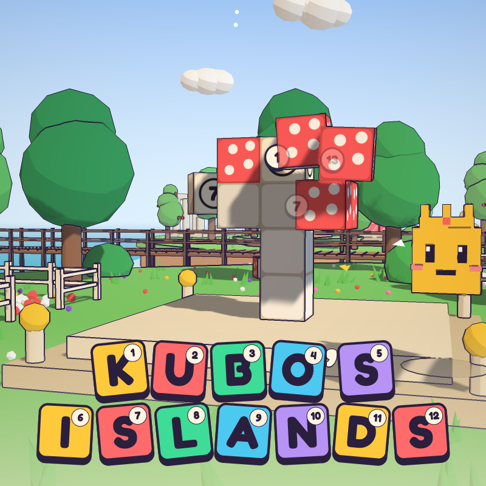

- ✓ 800×800, 274 kB.
- ✓ Lockup clear of the portal's 280×240 label zone.
Preview videos
Each opens on its cover and is nearly all play, through the player's own eyes with the HUD: the Rubber Duck's last blocks linked (one link, the rest chain in, the celebration), blocks grabbed off the snow on Frost Isles, the Magnet and Kubo Express at the Lighthouse, a three-block chain at sunset on Sunset Reef, the updraft lifting you up the Rocket on Moon Isle, a run across the Keeper's Isle to a world's portal, and one look at the Keeper Colossus to close. Every frame is the game running in real time; no audio, no text but the game's own HUD.
- ✓ 1920×1080, h264.
- ✓ 15.6 s (15–20 s).
- ✓ 16.69 MB of 50 MB.
- ✓ No audio track.
- ✓ No black frames (blackdetect).
- ✓ 1080×1620, h264.
- ✓ 15.6 s (15–20 s).
- ✓ 11.80 MB of 50 MB.
- ✓ No audio track.
- ✓ No black frames (blackdetect).
Press kit not asked for by the form
1920×1080 stills of the video's moments and of the worlds at their prettiest (rendered at twice the size and scaled down), and the game's icon.
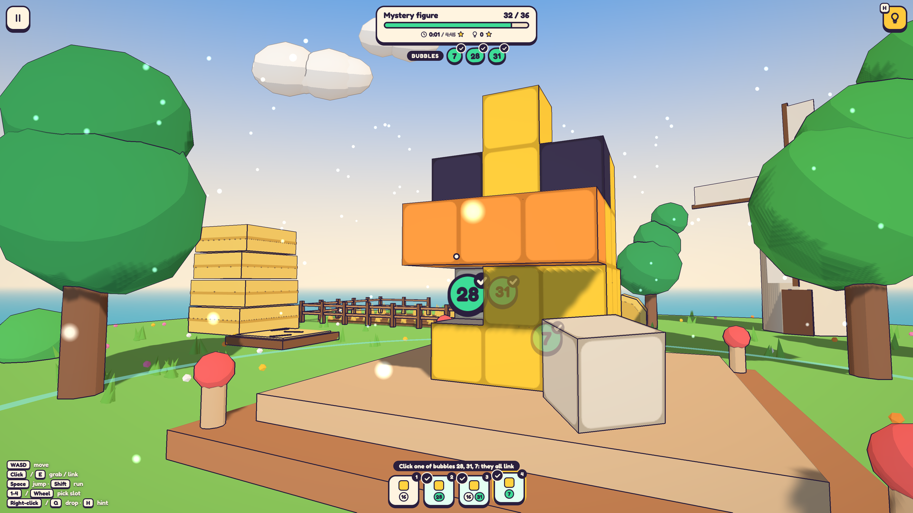

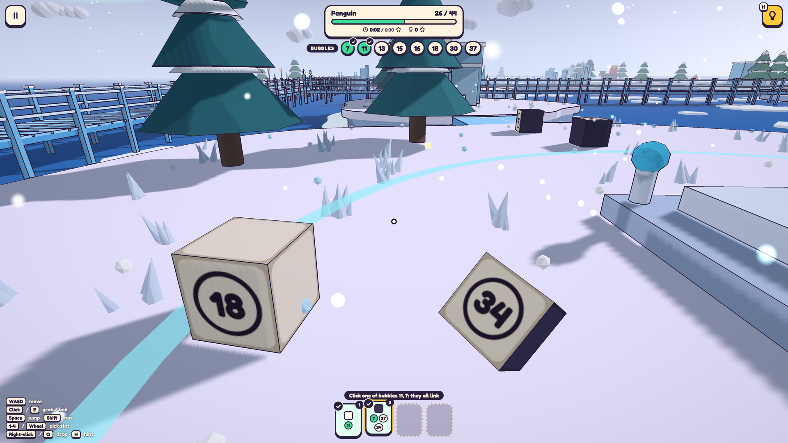

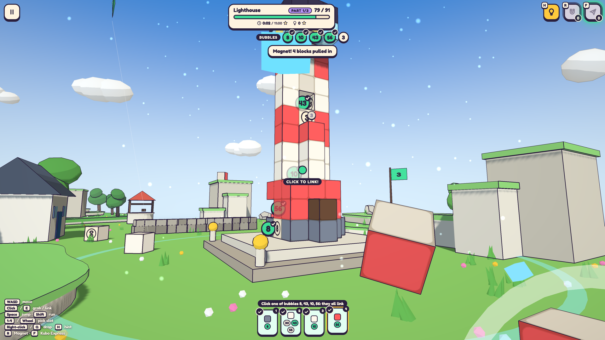

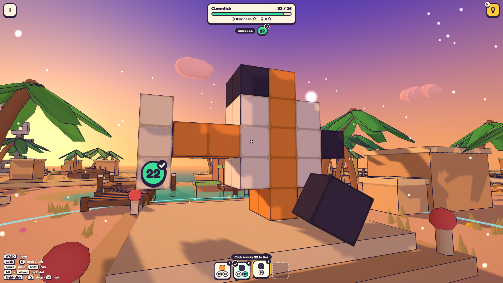

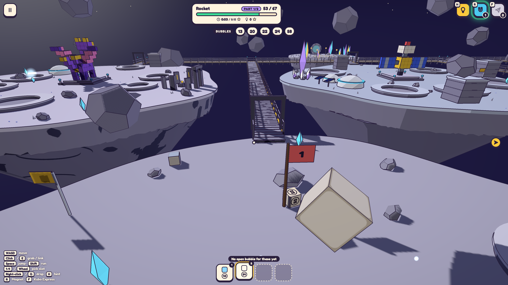

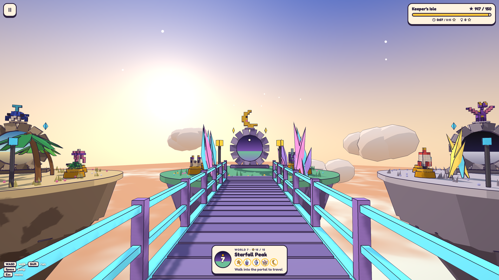

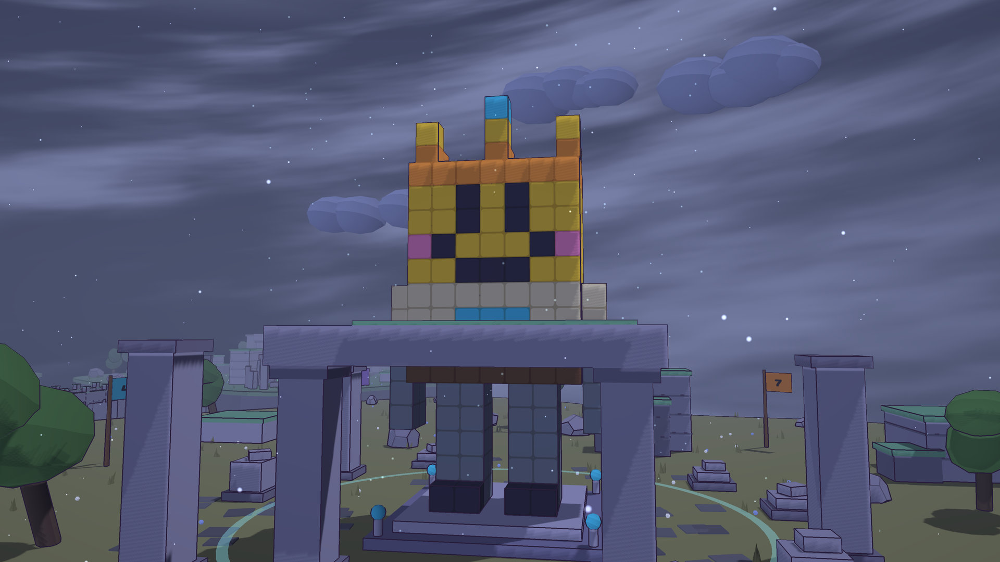

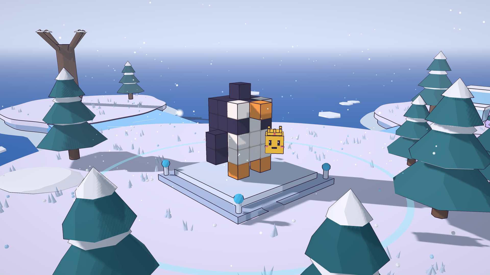

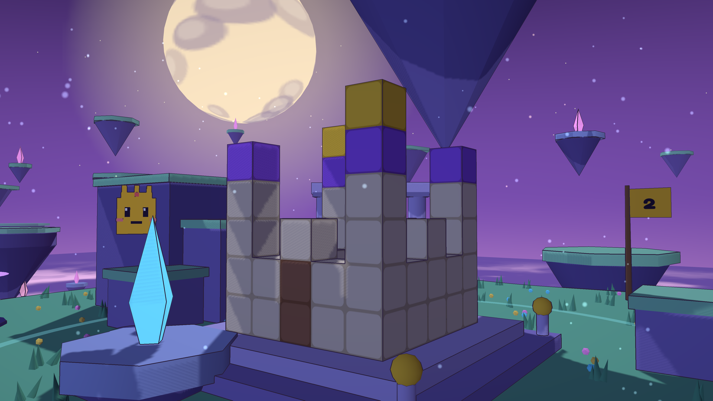

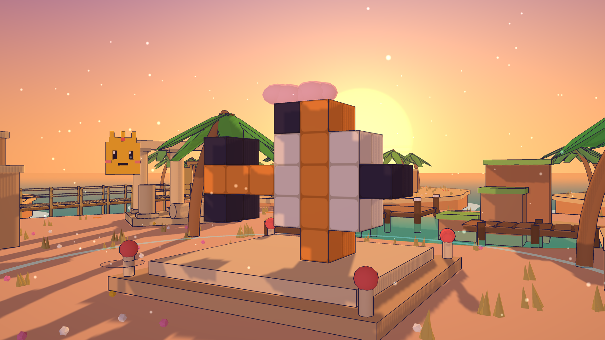

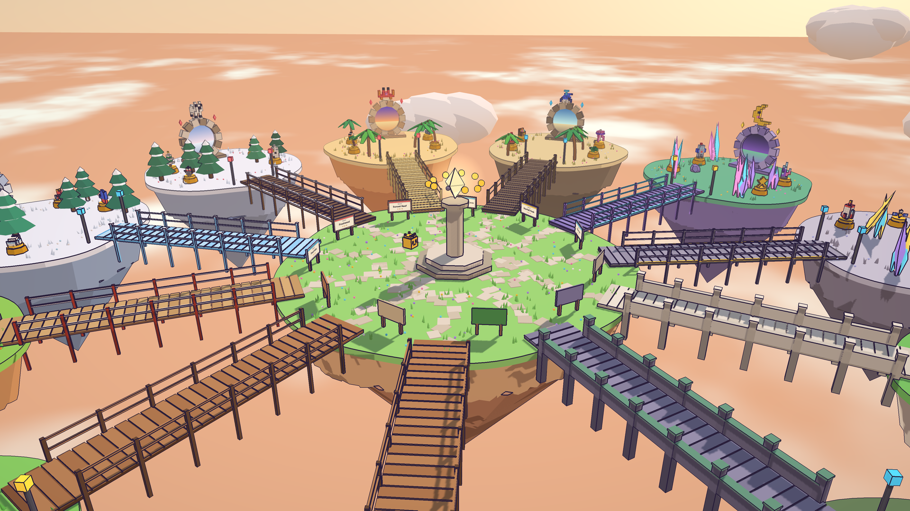

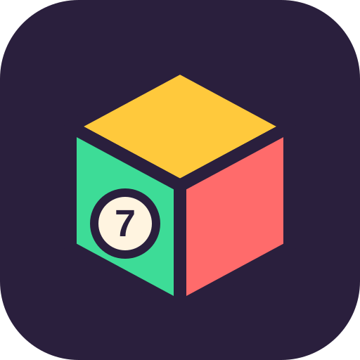

Before you submit
- Run
node tools/art-pack.mjsand read its last lines: nothing may be out of spec. - Upload the game folder's files (not a zip) with the HTML5 engine.
- Tick the game options as above; the orientation can only change with a new build.
- Paste the description and controls with Copy formatted and check the headings arrived as headings.
- Upload the three covers and both videos; accept the cropper's full frame.
- Play one figure to the end in the portal's preview, on desktop and on a phone, before sending it for review.
Open points
Things the portal's QA may ask about. None blocks a submission.
- No rewarded ads. There is nothing a rewarded ad could honestly sell yet: hints are free (they only cost the no-hint star), and nothing is locked behind anything but play. If one is wanted later, "keep the no-hint star" for one more hint is the natural trade.
- Interstitial frequency. The game asks for one after every finished figure and every walk through a portal, and leaves the pacing to the platform's own cap (one every few minutes).
Settled: the CrazyGames integration
- SDK lifecycle.
loadingStartas the page starts andloadingStopwhen the first screen is up;gameplayStart/gameplayStoponly on real transitions: in play on an island, the Keeper's Isle, the Garden and the Workshop editor; out of it in menus, cutscenes, the celebration, the pause menu, while held upright and while an ad is up.happytimefor a rebuilt world, the finale and the 150th star. - Interstitials (
midgame) after a finished figure (once its celebration is over, before the results card) and when walking through a portal, either way between a world and the Keeper's Isle (behind the portal's flash). Never on a button: the pause menu's and title's way to the Keeper's Isle and the results card's "next world" bring none. While an ad is requested the game stands still (no clock runs) and takes no input; while it plays the game is silent. - Progress in the Data module, merged with the browser's copy; and the game starts even where touching
localStoragethrows (Safari with third-party data blocked). - The portal's mute outranks the game's sliders, and no in-game fullscreen switch on CrazyGames.
- Off CrazyGames the SDK is never loaded and all of it is a no-op.
tests/e2e/crazygames.mjschecks it with a stand-in SDK; every other suite runs without one.